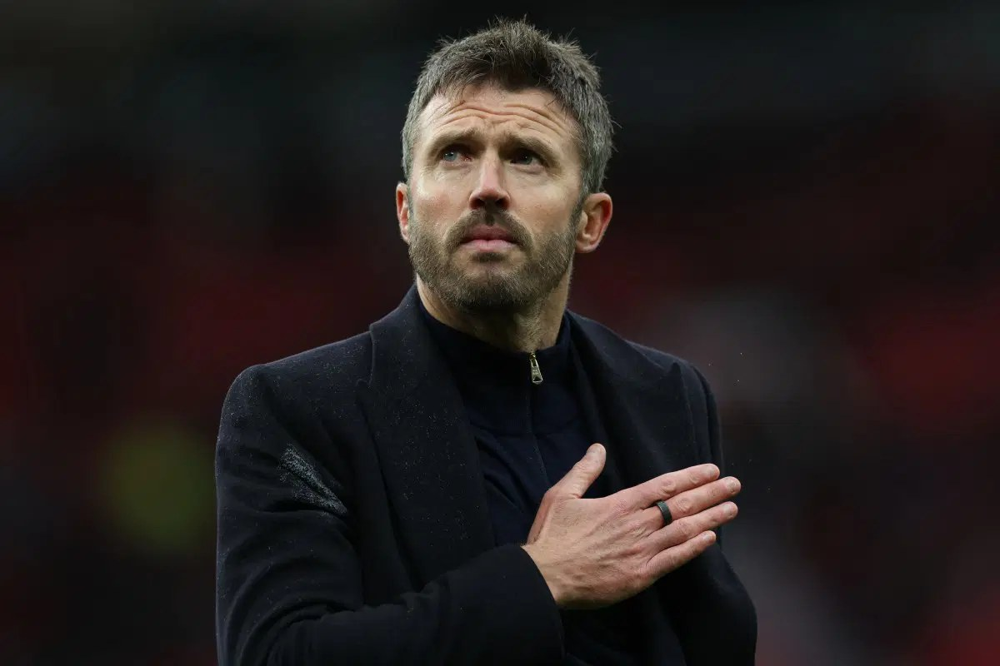

Carrick not surprised he’s still Man Utd manager

Michael Carrick said he was not surprised to remain Manchester United manager despite mounting pressure over the club’s results. Speaking ahead of Saturday’s away match against Chelsea, he said his focus was on improving the team and that he did not need assurances from the club’s leadership about his future.
United have gone eight games without a win. Their 3-0 home defeat by Bournemouth on Sunday left them one point above the Premier League relegation zone. The club have won two of 12 matches in all competitions this season, while seven points from their first eight league games marks their worst start to a league campaign in 40 years.
Carrick’s position has drawn scrutiny during the run of poor results. Bruno Fernandes was left out of the starting line-up against Bournemouth after criticising Carrick’s tactics following a 4-1 defeat by Como. Carrick described the decision to bench the United captain as one made for that game and said Fernandes remained committed to the club.
Carrick received applause from supporters as he left the pitch after the Bournemouth match, while players were booed. Former United captain Gary Neville said earlier on Thursday that sometimes a manager needs to be sacked for their own good. Carrick said he would not walk away, adding that he understood the responsibility of the role and cared about what supporters saw from the team. He said the players were hurting over their results but remained hungry to improve.
Source: Vanguard